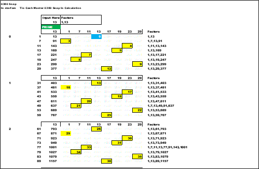
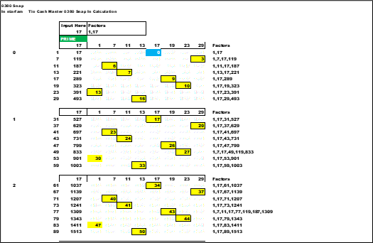

<div class="blurb">
<!-- -->       
<!-- ############################################################### -->	
    	
	  


	  
<p></p>

<p></p>
  
  
  
    
<!-- ############################################################### -->	
<!-- https://www.w3schools.com/css/tryit.asp?filename=trycss_float_images_side -->	  
<!-- float two images side by side -->
<style>
* {
  box-sizing: border-box;
}

.img-container {
  float: left;
  width: 47%;
  padding: 5px;
}

.clearfix::after {
  content: "";
  clear: both;
  display: table;
}
</style>	  
<!-- ############################################################### -->	
<!-- ############################################################### -->	
<div class="clearfix">
  <div class="img-container">
  
  </div>
  <div class="img-container">
  
  </div>
</div>	  
<!-- ############################################################### -->	
	  
	  
	  
	  
<!-- make down file link-->
<!-- https://www.howtogeek.com/747810/how-to-make-a-direct-download-link-for-google-drive-files/-->
<!--     Your copied link should look something like the following. From this link, copy the text that's between d/ and /view . This is the unique file ID for your Google Drive file.       -->
<!--                                                                                                                                                                                         -->
<!--     https://drive.google.com/file/d/1Q7MB6smDEFd-PzpqK-3cC2_fAZc4yaXF/view?usp=sharing                                                                                                  -->
<!--                                                                                                                                                                                         -->
<!--                                                                                                                                                                                         -->
<!--     In the following link, replace FILEID with the unique file ID that you copied from above.                                                                                           -->
<!--                                                                                                                                                                                         -->
<!--     https://drive.google.com/uc?export=download&id=FILEID                                                                                                                               -->
<!--     Your final link should look similar to this:                                                                                                                                        -->
<!--                                                                                                                                                                                         -->
<!--     https://drive.google.com/uc?export=download&id=1Q7MB6smDEFd-PzpqK-3cC2_fAZc4yaXF                                                                                                    -->
<!--     And that's the direct download link for your selected Google Drive file. Click the link or paste it into your browser, and instead of displaying                                    -->
<!--   a web page, it will immediately start the file download. Very handy!                                                                                                                  -->
<br>
<a href="https://drive.google.com/uc?export=download&id=1LLa8vewxO53ATIyt7JQL8_NKAKCRvYwo"> Download File</a>


<!-- 
<br>
<a href="https://drive.google.com/uc?export=download&id=1LLa8vewxO53ATIyt7JQL8_NKAKCRvYwo"> Download Chapter File</a>
 -->

<!-- ############################################################### -->	

<br>

<a href="https://cashfields.github.io/PrimeSuspects/html/Chapter 0020 Prime.html" target="_self">next</a>
<br>
<a href="https://cashfields.github.io/PrimeSuspects/index.html">index</a>
	   
<hr>

<!-- ############################################################### -->	
<!-- ##################### -->	
</div><!-- /.blurb -->
 
  
